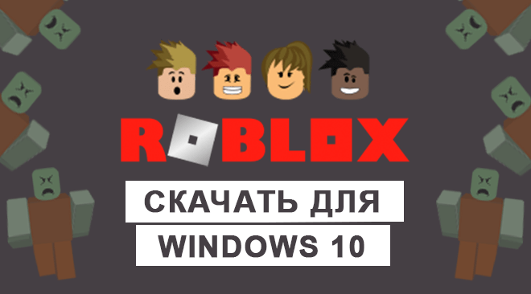
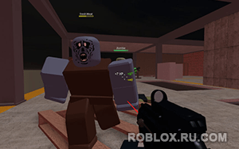

|  | Категория: | Онлайн платформа |
| Поддерживаемые ОС: | Windows 10 | |
| Разрядность: | 32 bit, 64 bit, x32, x64 | |
| Для устройств: | Компьютер | |
| Язык интерфейса: | на Русском | |
| Версия: | Последняя | |
| Разработчик: | Roblox Corporation |
Не будет проблемой для любого игрока скачать Роблокс для Windows 10 всего то необходимо установить лаунчер — одна из самых популярных во всем мире игр в жанре «песочница» с возможностью создавать собственные миры. На данный момент в ней зарегистрировано более 200 миллионов пользователей. Игра, сделанная в стиле «полной свободы действий», где можно креативить бесконечно, предлагая другим участникам не только собственное видение идеального виртуального пространства, но и устанавливать правила, включая заработок реальных денег.
 |
 |
 |
{kind=link}
Роблокс для Windows 10 на компьютер
Приложение так же функционировало под более ранними версиями Windows, поскольку первая версия появилась в далеком 2006 году. Но она поддерживается постоянно, а в эпоху печально известной коронавирусной пандемии, когда живое человеческое общение становится редкой роскошью, и вовсе подняла онлайн почти в два раза. Сейчас вирт-песочница бьет все рекорды, а некоторые предметы там продаются по суммам, сопоставимым со стоимостью если не элитного авто, то сумки от топового бренда уровня Gucci. Причем в игре нет никаких серых схем, незаконных действий — по крайней мере, они пресекаются поддержкой, мошенников банят.
Если вы уже играли в Роблокс, то знаете, что здесь можно делать практически все, что угодно: создавать свои собственные карты, играть в мини-игры, например, на внимательность, на скорость, устраивать гонки или бои. У вас получится конструировать и программировать роботов, заниматься спортом, а также общаться с друзьями в чате. Все это дает возможность игрокам чувствовать себя абсолютно по-разному. Выбирайте подходящий мир — от самого базового, Adopt me (эдакая современная версия известного в девяностые годы Тамагочи), до сложных интеллектуальных битв.
Roblox для версий windows:
Возможности и преимущества Roblox
Множество жанров игр
Играть с друзьями
Создавать свои миры

Для всех устройств

Скачать Роблокс для Windows 10 бесплатно
| Приложение | OS | Распаковщик | Формат | Версия | Загрузка |
|---|---|---|---|---|---|
| Roblox (Роблокс) | Windows 10 | OpenBox | x32 | Бесплатно (на русском) | |
| Roblox (Роблокс) | Windows 10 | OpenBox | x64 | Бесплатно (на русском) | |
| Roblox (Роблокс) | Windows 10 | OpenBox | x32 — x64 | Бесплатно (на русском) | |
| —> Решение ошибки в Roblox «An unexpected error occurred and Roblox» <— | |||||
Как установить Roblox для windows 10:
Запустите файл.

Ознакомьтесь с информацией и нажмите "Далее".
Нажмите "Далее", или снимите галочки с рекомендуемого ПО и нажмите "Далее". Если снять все галочки, рекомендуемое ПО не установится!

После нажатия далее, произойдет установка.
Система продолжает развиваться, привлекая все большее количество пользователей. Ежедневно появляются новые плейсы, где можно участвовать с задуманных другими юзерами активностях — соревноваться на автопробегах, вступать в битвы на огромных боевых меха-роботах или играть в шахматы. Для этого есть специальные сервера с множеством игроков. Благодаря этому игра стала еще более интересной, а также популярной. Как отмечают создатели, Roblox — в большей степени магазин приложений, нежели собственно игра, потому что в ней слишком много всего, разнопланового и рассчитанного на совершенно противоположных по складу характера и интересам людей.
Недавно начал пользоваться, не сразу разобрался.
Многопользовательская игра,с разнообразными плейсами.